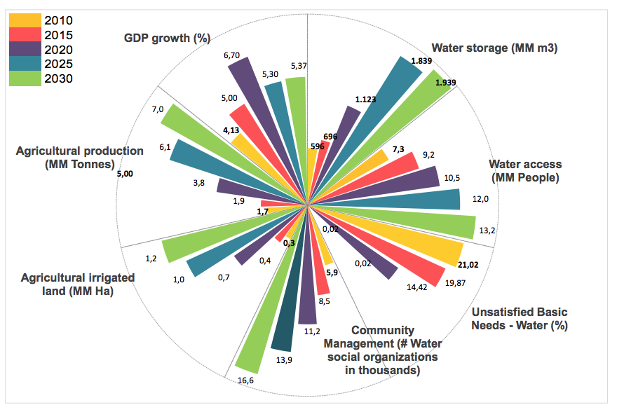

In accordance with the relevant paragraphs of Decisions 1 / CP.19 and 1 / CP.20, Bolivia communicates its Intended Nationally Determined Contribution (INDC), conditional to the new climate agreement to be approved at the COP 21 effectively reflects article 4.7 of the United Nations Framework Convention on Climate Change (UNFCCC), which states: "… the extent to which developing country Parties will effectively implement their commitments under the Convention will depend on the effective implementation by developed country Parties of their commitments under the Convention related to financial resources and transfer of technology and will take fully into account that economic and social development and poverty eradication are the first and overriding priorities of the developing country Parties."
Respecting and demanding compliance with the UNFCCC, the Plurinational State of Bolivia observed the intention of several Annex I countries to standardize the emission reduction responsibilities eliminating the principle of Common but Differentiated Responsibility, through the figure of a standard “contribution” for all countries, regardless of the historical responsibility, as well as limiting responsibility for the provision of means of implementation under article 4.7 of the UNFCCC aforementioned.
Therefore, in Warsaw COP19 the Plurinational State of Bolivia submitted a “LEGAL INTERPRETATION” in regards to the INDC, stating that to Bolivia, decision FCCC/ADP/ 2013/L.4/Add.1 should be applied in strict accordance to Article 4, in particular paragraph 7 of the Convention.
Consequently, the contribution made by Bolivia applies under strict compliance with Article 4.7 of the UNFCCC.
Bolivia’s contribution bears into account that the new climate agreement must be developed over the basis of the vision of the peoples and social organizations, to be revealed in the conclusions of World People’s Conference on Climate Change and the Defence of Life in October 2015, rejecting in turn the vision of empires and transnational corporations, paving the way for a solution to the climate crisis from another alternative to the current view.
The structural cause that has triggered the climate crisis is the failed capitalist system. The capitalist system promotes consumerism, warmongering and commercialism, causing the destruction of Mother Earth and humanity. The capitalist system is a system of death. Hence, capitalism is leading humanity towards a horizon of destruction that sentences nature and life itself to death. In this regard, for a lasting solution to the climate crisis we must destroy capitalism.
The capitalist system seeks profit without limits, strengthens the divorce between human beings and nature; establishing a logic of domination of men against nature and among human beings, transforming water, earth, the environment, the human genome, ancestral cultures, biodiversity, justice and ethics into goods. In this regard, the economic system of capitalism privatizes the common good, commodifies life, exploits human beings, plunders natural resources and destroys the material and spiritual wealth of the people.
Thus, Bolivia presents its intended contribution consistent with its vision of holistic development, according to the provisions of the State Constitution, Law No. 071 of The Rights of Mother Earth and Law N° 300 of Mother Earth and Integral Development to Live Well, guided by the 2025 Patriotic Bicentennial Agenda and its 13 pillars, as well as national plans for medium and long-term.
Bolivia understands Living Well as the civilizational and cultural horizon alternative to capitalism, linked to a holistic and comprehensive vision that prioritizes the scope of holistic development in harmony with nature and as structural solution to the global climate crisis. Living Well is expressed in the complementarity of the rights of peoples to live free of poverty and the full realization of economic, social and cultural rights and the rights of Mother Earth, which integrates the indivisible community of all systems life and living, interrelated, interdependent and complementary beings who share a common destiny.
Protecting the integrity of Mother Earth, and especially the rights to regeneration in the context of climate change can be achieved through the distribution of the budget surplus of carbon emissions and greenhouse gases among all countries of the world in the context of climate justice criteria.
The climate crisis which we live has been generated by the exploitation of atmospheric space by and in favor of developed countries, as expressed in the third paragraph of the UNFCCC, Noting that the largest share of historical and current global emissions of greenhouse gases has originated in developed countries, that per capita emissions in developing countries are still relatively low and that the share of global emissions originating in developing countries will grow to meet their social and development needs.
The AR5 IPCC report states that a total of 2,000 GtCO2 were emitted between 1750 and 2010, 1,160 correspond to the member countries of the Organization for Economic Cooperation and Development (OECD) till 1990 and the transition economies, in other words Annex I countries.
Much of the corresponding non- Annex I emissions during historical periods of colonialism and neo- colonialism favored the enrichment of the industrial and imperialist countries; configuring a climate colonialism expressed through the control of atmospheric space.
Country contributions should be consistent with the recognition of historical responsibility and as expressed in paragraph 2 of decision 1 / CP18 "… the efforts of the parties should be made on the basis of equity and common but differentiated responsibilities and respective capabilities … and should take into account the imperatives of equitable access to sustainable development, the survival of countries and protecting the integrity of Mother Earth."
Bolivia has proposed a fair and equitable sharing of atmospheric space, taking into account the capacity for regeneration and protection of the integrity of Mother Earth. To not exceed 1.5 degree temperature by 2050, the budget set by the Intergovernmental Panel on Climate Change (IPCC) is 650 GtCO2. In order to implement the distribution of remaining carbon budget that would ensure the stabilization of concentrations of greenhouse gases in the atmosphere, Bolivia has proposed a Climate Justice Index for the fair and equitable sharing of the global emissions budget; moreover this means of distribution would impart the carbon budget based on the following indicators:
a) Historical responsibility. Includes responsibility for the cumulative emissions since the pre-industrial era (1750-2010).
b) Ecological Footprint. A calculation based on the amount of land, water and forest people of the countries need to satisfy all the goods consumed and to assimilate the waste they generate.
c) Capacity development. Represents the conditions of economic and social development of each country.
d) Technological capacity. Measures the ability of countries considering their technological development based on expenditures on Research & Development and industrial performance of each of them, considering their capacity to produce and export goods with high technology.
This index fairly determines the effort required by each country to stay within the budget of remaining emissions that corresponds to them. This implies that countries with high historical responsibility, high ecological footprints, greater development and greater technological capabilities, have a smaller share of the budget.
As a result of implementing the Bolivian index proposal, non- Annex I countries would have a total of 89% of the budget and Annex I countries only 11%. Also, to perform monitoring and sanction non-compliance with international commitments involves establishing an International Climate Justice Tribunal.
Bolivia has all the climates of the intertropical zone, from tropical climate in the plains to polar climate— as it reaches the high mountains, thus the impacts of climate change are diverse. During the past 50 years, the country has lost about 50% of the glacier surface and higher temperatures and stronger precipitation events are expected during the rainy season, which will expose different regions of the country to prolonged dry periods and an increase in the frequency and magnitude of floods, flash floods, hailstorms, overflowing rivers, landslides and frost. The effects are evident in the social sectors (health, education, housing), economic (agriculture and industry) and infrastructure and services, which affect the way of life and production of the most vulnerable populations.
From 1982 to 2014, more than 4 million people have been directly affected by these phenomena, reaching about 40% of the population with an economic impact between 1-2% of GDP, depending on the severity of the weather event. By 2030, 27% of the country could be affected by persistent drought and 24% with highly recurrent floods.
Extreme poverty in Bolivia reached 17.3% of the population in 2015, and this will be erradicated by 2025. However, this is not possible if there are no actions to fully develop the national economy and reduce the impacts of change climate. Thus, Bolivia has prioritized a linkage of mitigation and adaptation actions in complementarity with the holistic development in the areas of water, energy, forests and agriculture as part of its 2025 Patriotic Agenda, and national development plans.
Bolivia has launched programs “My Water” and “My Irrigation” that have led to increased drinking water coverage to 90% inurban areas and 61% inrural area by 2012, and in relation to irrigation, irrigation coverage has increased to 362,000 hectares by 2014, on the basis of comprehensive and community management of water resources. In the immediate future, Bolivia plans to implement multipurpose hydro projects to enable coverage of irrigation and water storage capacity in the country and thereby strengthening adaptation to climate change.
Bolivia has large forest areas, with 52.5 million hectares in 2015. In Bolivia, forests provide livelihoods for communities and small producers and their environmental functions promote and contribute to the living well of urban and rural populations. Protected areas in Bolivia cover 22.5% of the national territory, of which 17 million hectares are under national jurisdiction. Bolivia considers that forests facilitate the provision of environmental functions, strengthen food security and livelihoods of local and national population in a complementary manner and promote timber and non-timber forest production and agroforestry systems, consolidating their contribution to development of the country. Thus forests contribute jointly to mitigation and adaptation to climate change.
With regard to agricultural production, Bolivia faces the challenge of expanding the area of food production in areas with agricultural potential mindful of environmental functions and promoting community and small farmers production. To date, Bolivia has an area of 3.5 million hectares for agricultural production and 2.2 million hectares for livestock production, which represents 5% of the country. Small farms and communities comprise a total of 57% of the titled area, 33% owned by the State, including protected areas and public land, and 9% are medium and large properties. Thus, agricultural production with the participation of smallholders and communities has an important contribution to climate change adaptation.
With regard to energy, Bolivia has increased access to electricity to 82% of the population in national average, and plans to achieve universal electricity coverage by 2025. Energy development is a key factor in expanding economic diversification, producing renewable energy and improving energy efficiency. Electric power will become one of the generators of wealth for Bolivians through investments in hydropower and alternative energy. This will also increase the export capacity of energy from renewable sources to neighbouring countries. Therefore, energy is an important part of efforts to mitigate climate change.
Living Well with the vision of holistic development in which the Intended Nationally Determined Contribution of Bolivia is based on, includes the construction of a holistic human being without material, social and spiritual poverty; universal access of the population to all basic services, in the context of the human right to water; a social and community production model that generates wealth and redistributes it to build a more equal society; productive growth based on diversification by strengthening the energy, agriculture and tourism, and boosting oil and mining sectors with industrialization; roadside, railway and river integration of the country, connecting populations and the flow of goods between the Atlantic Ocean and Pacific Ocean; and an environmental management model for living systems to eradicate poverty, fully develop the local and national economies in a complementary way with the conservation of environmental functions and the development of sustainable production systems.
Bolivia considers that it must make fair and ambitious efforts to address the impacts of climate change, although it has not caused the phenomenon of global warming. Also, Bolivia defines its national contribution in the context of the 17 Sustainable Development Goals and its 169 goals, which are part of the new development agenda, from a holistic view of the commitments, to be implemented voluntarily by each State and framed by the Political Declaration of the General Assembly resolution document. The fight against climate change for sustainable and harmonious development with nature on the basis of management systems life is present in this vision.
This contribution responds to the application of a holistic approach to the construction of Living Well with joint impacts of mitigation and adaptation to climate change and takes place in a context of expanding the productive capacity of the country with diversification in the fields of agriculture and energy as sustainable sources of income for the country, strengthening the environmental functions, and the role of forests in the integral development, eradicating poverty as the basis of living well.
Bolivia will make an ambitious contribution in the context of national efforts; However, results and actions to mitigate and adapt can increase if it has the provision of means of implementation through mechanisms of international cooperation in the framework of the Convention, in accordance with the principles and provisions of the Convention, in particular Articles 4.4 and 4.7.
Bolivia considers that the joint approach between mitigation and adaptation in the context of overall development plans, is the only way to systematically address climate change, including the links between the different social, economic and environmental dimensions. Bolivia raises the need to establish a mechanism for international cooperation to support the integral development and climate resilience and the start of implementation of a Joint Mitigation and Adaptation Mechanism for Integral and Sustainable Management of Forests to strengthen synergies between mitigation and adaptation climate change in the field of forests.
To contribute in solving the climate crisis based on the alternative vision of living well, helping to implement proposals that allow the world to advance structural solutions to the climate crisis, Bolivia presents the following contribution in two dimensions: one linked to the structural solutions, and other results and national actions within the framework of holistic development.
Bolivia considers its nationally determined contributions as an ambitious and just effort, considering its national circumstances. Bolivia’s contribution articulates in two periods in an integrated manner. The first is linked to the 2015-2020 period, in the understanding that all countries should undertake ambitious efforts now in order to achieve ambitious reduction in increase of global temperature. The second is related to the 2021-2030 scenario. Also, both periods consider the additional results that could be achieved with the support of international cooperation and the financial mechanism of the UNFCCC, understanding cooperation as grant-based finance and technology transfer.
The contribution seeks in a integrated and complementary manner different intended results linked to the achievement of living well in the context of climate change with regards to water, energy, forest and agriculture and livestock, in the following manner:
i) With regards to water, actions will be promoted with a focus on adaptation to climate change and risk management, aiming for the following results:
The following measures and actions will be developed for the achievement of results linked with water:
ii) With regard to energy, actions are promoted with a focus on mitigation and adaptation to climate change and holistic development, achieving the following results:
iii) In relation to forests and agriculture, actions will be promoted with a focus on joint mitigation and adaptation to climate change and holistic development, achieving the following results:
To achieve the results mentioned beforehand in forests and in agricultural, forestry and agro-forestry production systems, the following measures and actions will be implemented:
i) In regards to water, the following results is estimated:
ii) In regards to energy, the following results is estimated:
iii) In regards to forests and agriculture, the following results is estimated:
This annex contains the methodologies used to calculate the results of the Intended Nationally Determined Contribution by the Plurinational State of Bolivia.
Global emissions budget
Bolivia has developed the Climate Justice Index to calculate the participation of countries in the distribution of CO2 budget fairly and with a climate justice criterion. For this purpose data of the ecological footprint, historical responsibility, development capacity, technological capacity, and the population of the countries were used.
The following calculation for the these variables and data sources are used: i) for the calculation of the ecological footprint, the Ecological Footprint Global Index used by the UN Programme (UNEP) and the Convention on Biological Diversity (CBD), corresponding to Footprint Network; ii) The historical responsibility is calculated based on CO2 emissions since 1750, distributed according to IPCC data for 2010; iii) For the calculation of development capacity, the following was used: i) Gross Domestic Product (GDP) with World Bank data, ii) Poverty as a percentage of the population living on less than $ us1,25 with data from the Statistical Division of the United Nations, and iii) the Human Development Index (HDI) developed by UNDP; and iv) The technological capability used the Performance Index of Industrial Competition by UNIDO and R&D expenditure as a percentage of GDP based information from the World Bank.
The equation developed by Bolivia in calculating the Climate Justice Index comprises the ecological footprint (hj), historical responsibility (rj), development capacity (dj), technological capacity (tj) and population (pj) as detailed below:
𝑖𝑗=ǁexp(−𝜃1ℎ𝑗−𝜃2𝑟𝑗−𝜃3𝑑𝑗−𝜃4𝑡𝑗+𝜃5𝑝𝑗)ǁ𝓁1
The indicator of percentage distribution of the carbon budget (ij) is obtained by multiplying each variable normalized by a weight θ∈R0,1 and adding the result to the equation, where the signs of the parameters θ∈R0,1 reflect the direction the relationship between the variable and the percentage of budget.
Graph 1. Distribution of the CO2 budget
This graph shows the percentage distribution of the countries grouped in Annex I and non-Annex I, defined in the context of the UNFCCC, resulting from the application of this methodology. The indicator percentage distribution of carbon budget is obtained by multiplying each variable standardized by a specific weight with a vision of climate justice that gives greater relevance to the historical responsibility, population and development capacity when calculating the percentage distribution of CO2 budget equivalent. The calculations reflect the direction of the relationship between the variables and the percentage of budget (low budget to greater ecological footprint, greater historical responsibility, greater development capacity and / or technology, and higher budget compared to a larger population).
Bolivia has developed the Hydric Vulnerability Index based on the conceptual framework on vulnerability of the Fourth Report of the Intergovernmental Panel on Climate Change (IPCC) in 2007. It establishes that vulnerability depends on the sensitivity and adaptation capacity of the system. Base on this:
Hydric Vulnerability = Hazard + Sensitivity of Water System - Water Adaptability.
This index is based on an analysis of the comprehensive effect (external and internal), taking into account: i) intensity, persistence and recurrence of the threats of climate change, ii) sensitivity of living systems and communities that coexist in such systems and iii) ability to adapt to climate change, which in turn includes: catchment, reservoir, storage and provision of water for human consumption and irrigation, increased social community water management, improving agricultural production with more efficient irrigation systems, wastewater reuse in big cities, and the universal expansion of national coverage of drinking water.
Bolivia has also developed the Index of Adaptation Capacity in Water, which was calculated using data from community management (𝑔𝑗), productivity (𝑦𝑗) water storage (𝑐𝑗), access to water (𝑎𝑗) and poverty (𝑝𝑗) between 2015 and 2030, through the following equation:
𝑖𝑗= 𝜃1𝑔𝑗+𝜃2𝑦𝑗+𝜃3𝑐𝑗+𝜃4𝑎𝑗−𝜃5𝑝𝑗
This index (𝑖𝑗) was obtained by multiplying each variable normalized weight θ∈ℝ ^ 0.1 and adding the result to the equation, so that an increase in community management, productivity, storage and access to water will increase the value of the indicator, reflecting greater resilience, while an increase in poverty will reduce the value of the indicator representing less adaptability.
The main variables analyzed are impacts and outcomes with respect to water, and articulated in an integrated and complementary way, the same as shown in the graph below.
Figure 2. Reducing water vulnerability and increasing adaptive capacity in water

The above graph displays, in an integrated manner, the articulation of different variables associated with the storage of water and its impact on increasing access to water and increased agricultural production, while promoting the growth of agricultural GDP and reducing poverty by unsatisfied basic needs, and including community management of social organizations as a fundamental tool for achieving resilience related to water.
For the modelling of the scenarios in the electricity sector, as well as the calculation of carbon equivalent emissions (CO2e) and the optimization for each stage of electricity generation, the OSeMOSYS program (Open-Source Energy Modelling System), developed by the Royal Institute of Technology in Sweden (KTH) [2]. This program is an open source software that allows modelling and optimization the planning of medium and long-term energy systems.
CO2e emissions are estimated with the OSeMOSYS model using the emission factor of each project and plant (the ability to generate CO2 per MWh). Therefore, we observe a trend in in emissions growth and avoidance of greenhouse gases for scenarios with national effort and international cooperation.
The main variables analyzed are impacts and outcomes with respect to energy articulated to integrated and complementary means, as explained in the graph below.
Figure 3 : Development of the electricity sector with a focus on climate change

The graph above displays, in an integrated manner, the articulation of the most important different variables related to the electricity sector. The increase in electricity power influences the increase in export earnings, which in turn promotes the growth of GDP and this in the impact of reducing electricity NBI through electric coverage and reducing moderate and extreme poverty. Also, this displays the CO2 / energy and CO2 / GDP ratio, with a significant decrease in the proportion of CO2 influence in the economy and in power generation. Overall, this process contributes in reducing emissions from the electricity sector.
Bolivia has developed the Sustainable Life of Forest Index to measure the combined capacity to mitigate and adapt to the comprehensive and sustainable management of forests, agricultural and agroforestry production systems.
The index articulates environmental functions (𝑓!), poverty (𝑝!), community management (𝑔!), production (𝑦!), and forest cover (𝑐!), between 2015 and 2030. As environmental functions are provided for the following: i) carbon capture and storage; ii) the presence of organic matter in the soil; iii) availability of water; and iv) the presence of biodiversity in areas with high conservation value.
The equation designed by the Plurinational State of Bolivia to calculate the index Sustainable
Live of Forest Index is:
𝑖𝑗= 𝜃1f𝑗 - 𝜃2p𝑗+𝜃3g𝑗+𝜃4y𝑗+𝜃5c𝑗
The Index (𝑖𝑗) is obtained by multiplying each variable standardized by a weight 𝜃∈ℝ0,1 and adding the result in that equation, so an increase in environmental functions, community management, production and higher net forest cover, will increase the value of the index of aggregate capacity to mitigate and adapt, while a rise in poverty will reduce the value of the index.
The main variables analysed are results and impacts in relation to forests and agriculture and livestock articulate in an integrated and complementary way, as presented in the chart below.
Figure 4 : Integrated and sustainable management of forests and agricultural systems life with impacts mitigation and adaptation to climate change

In the graph above the relationship between variables related to the integrated and sustainable management of forests and agricultural systems of life are displayed, highlighting the importance of community management of forests, with impacts on the growth of food production and timber forest products. The importance of reforestation, reduction of illegal deforestation and increased forest cover in a scenario maintaining environmental functions is also displayed. As a result the increase of agricultural and forestry GDP impacts the reduction of national extreme poverty.
Informal translation. For the authoritative version, please refer to the Spanish version published on the UNFCCC website. ↩
For further reference, visit: www.osemosys.org ↩